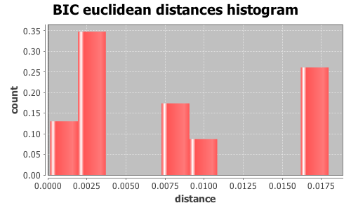

Application Meta
jModeltest 2.1
(c) 2011-onwards D. Darriba, G.L. Taboada, R. Doallo and D. Posada,(1) Department of Biochemistry, Genetics and Immunology
University of Vigo, 36310 Vigo, Spain.
(2) Department of Electronics and Systems
University of A Coruna, 15071 A Coruna, Spain.
e-mail: ddarriba@udc.es, dposada@uvigo.es
Wed Aug 26 12:42:01 EDT 2015
Mac OS X 10.10.5, arch: x86_64, bits: 64, numcores: 4
| Citation: | Darriba D, Taboada GL, Doallo R and Posada D. 2012. "jModelTest 2: more models, new heuristics and parallel computing". Nature Methods 9, 772. |
 Back to top
Back to top Settings
Arguments = -d group3/group3.txt.gene_9.phy -s 3 -i -g 4 -f -BIC -tr 7 -o group3out/g3outgene_9.txtInput Alignment: "group3/group3.txt.gene_9.phy"
NumTaxa = 17
Length = 1,659
Phyml version = 3.0
Phyml binary = PhyML_3.0_macOS_i386
Candidate models = 24
number of substitution schemes = 3
including models with equal/unequal base frequencies (+F)
including models with/without a proportion of invariable sites (+I)
including models with/without rate variation among sites (+G) (nCat = 4)
Optimized free parameters (K) = Substitution parameters + 31 branch lengths + topology
Base tree for likelihood calculations = Maximum Likelihood
Tree topology search operation = NNI
Model Optimization Results
| ID | Name | Partition | -lnL | p | fA | fC | fG | fT | ti/tv | R(a) | R(b) | R(c) | R(d) | R(e) | R(f) | p-inv | shape |
|---|---|---|---|---|---|---|---|---|---|---|---|---|---|---|---|---|---|
| 1 | JC | 000000 | 3953.9507 | 32 | - | - | - | - | - | - | - | - | - | - | - | - | - |
| 2 | JC+I | 000000 | 3898.4169 | 33 | - | - | - | - | - | - | - | - | - | - | - | 0.7830 | - |
| 3 | JC+G | 000000 | 3899.2645 | 33 | - | - | - | - | - | - | - | - | - | - | - | - | 0.0220 |
| 4 | JC+I+G | 000000 | 3896.1095 | 34 | - | - | - | - | - | - | - | - | - | - | - | 0.6210 | 0.7790 |
| 5 | F81 | 000000 | 3948.4692 | 35 | 0.2385 | 0.2257 | 0.2741 | 0.2616 | - | - | - | - | - | - | - | - | - |
| 6 | F81+I | 000000 | 3893.2365 | 36 | 0.2384 | 0.2267 | 0.2740 | 0.2610 | - | - | - | - | - | - | - | 0.7820 | - |
| 7 | F81+G | 000000 | 3894.0356 | 36 | 0.2384 | 0.2266 | 0.2740 | 0.2611 | - | - | - | - | - | - | - | - | 0.0280 |
| 8 | F81+I+G | 000000 | 3890.8780 | 37 | 0.2386 | 0.2265 | 0.2741 | 0.2608 | - | - | - | - | - | - | - | 0.6200 | 0.7810 |
| 9 | K80 | 010010 | 3865.1623 | 33 | - | - | - | - | 2.9998 | - | - | - | - | - | - | - | - |
| 10 | K80+I | 010010 | 3805.5823 | 34 | - | - | - | - | 3.3756 | - | - | - | - | - | - | 0.7940 | - |
| 11 | K80+G | 010010 | 3807.2213 | 34 | - | - | - | - | 3.2836 | - | - | - | - | - | - | - | 0.0220 |
| 12 | K80+I+G | 010010 | 3802.6622 | 35 | - | - | - | - | 3.4351 | - | - | - | - | - | - | 0.6520 | 0.7780 |
| 13 | HKY | 010010 | 3859.3344 | 36 | 0.2365 | 0.2260 | 0.2745 | 0.2631 | 2.9978 | - | - | - | - | - | - | - | - |
| 14 | HKY+I | 010010 | 3800.2254 | 37 | 0.2367 | 0.2274 | 0.2756 | 0.2604 | 3.3687 | - | - | - | - | - | - | 0.7930 | - |
| 15 | HKY+G | 010010 | 3801.7541 | 37 | 0.2366 | 0.2270 | 0.2754 | 0.2610 | 3.2809 | - | - | - | - | - | - | - | 0.0220 |
| 16 | HKY+I+G | 010010 | 3797.1866 | 38 | 0.2361 | 0.2276 | 0.2763 | 0.2601 | 3.4338 | - | - | - | - | - | - | 0.6410 | 0.7300 |
| 17 | SYM | 012345 | 3864.0937 | 37 | - | - | - | - | - | 0.8719 | 4.6662 | 0.7143 | 0.7823 | 5.4969 | 1.0000 | - | - |
| 18 | SYM+I | 012345 | 3804.6075 | 38 | - | - | - | - | - | 0.7841 | 4.8604 | 0.7092 | 0.6447 | 5.7434 | 1.0000 | 0.7940 | - |
| 19 | SYM+G | 012345 | 3806.2261 | 38 | - | - | - | - | - | 0.8026 | 4.7844 | 0.7074 | 0.6737 | 5.6906 | 1.0000 | - | 0.0220 |
| 20 | SYM+I+G | 012345 | 3801.5860 | 39 | - | - | - | - | - | 0.7828 | 4.8992 | 0.7247 | 0.6054 | 5.8024 | 1.0000 | 0.6530 | 0.7790 |
| 21 | GTR | 012345 | 3857.9284 | 40 | 0.2394 | 0.2233 | 0.2770 | 0.2604 | - | 1.0162 | 4.8894 | 0.7677 | 0.8513 | 6.1358 | 1.0000 | - | - |
| 22 | GTR+I | 012345 | 3799.1390 | 41 | 0.2387 | 0.2260 | 0.2777 | 0.2576 | - | 0.9475 | 5.1831 | 0.7818 | 0.7037 | 6.4823 | 1.0000 | 0.7920 | - |
| 23 | GTR+G | 012345 | 3800.6070 | 41 | 0.2388 | 0.2253 | 0.2776 | 0.2582 | - | 0.9681 | 5.1052 | 0.7780 | 0.7384 | 6.4454 | 1.0000 | - | 0.0220 |
| 24 | GTR+I+G | 012345 | 3796.0149 | 42 | 0.2379 | 0.2264 | 0.2785 | 0.2571 | - | 0.9546 | 5.2633 | 0.8061 | 0.6612 | 6.5785 | 1.0000 | 0.6520 | 0.7820 |
There are 2 different topologies. The following table shows the models supporting each topology and the rank according to each Information Criterion, as well as Robinson-Foulds and Euclidean distances with the tree of the best-fit model.
| ID | Models | Topology | AIC | BIC | AICc | DT | |
|---|---|---|---|---|---|---|---|
| 0 |
JC JC+I JC+G F81 F81+I F81+G K80 K80+I K80+G K80+I+G HKY HKY+I HKY+G HKY+I+G SYM SYM+I SYM+G SYM+I+G GTR GTR+I GTR+G GTR+I+G
|
RANK | - | 0 | - | - | |
| Weight | - | 1.0000 | - | - | |||
| RF | - | 0 | - | - | |||
| AVG Distance | - | 7.4580e-03 | - | - | |||
| Distance VAR | - | 4.3763e-05 | - | - | |||
| 1 |
JC+I+G F81+I+G
|
RANK | - | 1 | - | - | |
| Weight | - | 0.0000 | - | - | |||
| RF | - | 2 | - | - | |||
| AVG Distance | - | 7.8750e-03 | - | - | |||
| Distance VAR | - | 9.2443e-11 | - | - |
BIC Selection Results
Model selected
| Model | K80+I | ||
|---|---|---|---|
| partition | 010010 | ||
| -lnL | 3805.5823 | ||
| K | 34 | ||
| freqA | - | R(a) | - |
| freqC | - | R(b) | - |
| freqG | - | R(c) | - |
| freqT | - | R(d) | - |
| ti/tv | 3.3756 | R(e) | - |
| R(f) | - | ||
| p-inv | 0.7940 | gamma | - |
Best model tree
(((((((((I0150:0.00192011,(I0152:0.00262299,I0149:0.00349174):0.00085224):0.00196942,(I0076:0.00589395,I0075:0.00653519):0.00212419):0.00307949,I0119:0.01128347):0.00140987,(I0151:0.00367293,(I0148:0.00493783,I0144:0.00490172):0.00000002):0.00185500):0.00246533,(I0111:0.06883836,I0158:0.01337039):0.00126518):0.00117468,I0147:0.00754294):0.00189279,(I0135:0.00185068,I0127:0.00365987):0.00000003):0.00133134,I0141:0.00358779):0.00192940,I0068:0.00477028,I0067:0.00290851);
Display best model tree in PhyloWidget
| Model | -lnL | K | BIC | delta | weight | cumWeight |
|---|---|---|---|---|---|---|
| K80+I | 3805.5823 | 34 | 7863.2396 | 0.0000 | 0.6043 | 0.6043 |
| K80+I+G | 3802.6622 | 35 | 7864.8133 | 1.5737 | 0.2751 | 0.8794 |
| K80+G | 3807.2213 | 34 | 7866.5176 | 3.2780 | 0.1173 | 0.9967 |
| HKY+I | 3800.2254 | 37 | 7874.7677 | 11.5281 | 0.0019 | 0.9986 |
| HKY+I+G | 3797.1866 | 38 | 7876.1041 | 12.8645 | 0.0010 | 0.9996 |
| HKY+G | 3801.7541 | 37 | 7877.8250 | 14.5854 | 0.0004 | 1.0000 |
| SYM+I | 3804.6075 | 38 | 7890.9459 | 27.7063 | 0.0000 | 1.0000 |
| SYM+I+G | 3801.5860 | 39 | 7892.3168 | 29.0772 | 0.0000 | 1.0000 |
| SYM+G | 3806.2261 | 38 | 7894.1832 | 30.9435 | 0.0000 | 1.0000 |
| GTR+I | 3799.1390 | 41 | 7902.2508 | 39.0112 | 0.0000 | 1.0000 |
| GTR+I+G | 3796.0149 | 42 | 7903.4165 | 40.1769 | 0.0000 | 1.0000 |
| GTR+G | 3800.6070 | 41 | 7905.1868 | 41.9472 | 0.0000 | 1.0000 |
| K80 | 3865.1623 | 33 | 7974.9857 | 111.7461 | 0.0000 | 1.0000 |
| HKY | 3859.3344 | 36 | 7985.5717 | 122.3321 | 0.0000 | 1.0000 |
| SYM | 3864.0937 | 37 | 8002.5044 | 139.2648 | 0.0000 | 1.0000 |
| GTR | 3857.9284 | 40 | 8012.4156 | 149.1760 | 0.0000 | 1.0000 |
| JC+I | 3898.4169 | 33 | 8041.4949 | 178.2553 | 0.0000 | 1.0000 |
| JC+G | 3899.2645 | 33 | 8043.1900 | 179.9503 | 0.0000 | 1.0000 |
| JC+I+G | 3896.1095 | 34 | 8044.2940 | 181.0544 | 0.0000 | 1.0000 |
| F81+I | 3893.2365 | 36 | 8053.3760 | 190.1363 | 0.0000 | 1.0000 |
| F81+G | 3894.0356 | 36 | 8054.9742 | 191.7346 | 0.0000 | 1.0000 |
| F81+I+G | 3890.8780 | 37 | 8056.0728 | 192.8332 | 0.0000 | 1.0000 |
| JC | 3953.9507 | 32 | 8145.1485 | 281.9089 | 0.0000 | 1.0000 |
| F81 | 3948.4692 | 35 | 8156.4274 | 293.1878 | 0.0000 | 1.0000 |
| -lnL: | negative log likelihod |
| K: | number of estimated parameters |
| BIC: | Bayesian Information Criterion |
| delta: | BIC difference |
| weight: | BIC weight |
| cumWeight: | cumulative BIC weight |
Confidence interval
There are 24 models in the 100.00% confidence interval:
K80+I K80+I+G K80+G HKY+I HKY+I+G HKY+G SYM+I SYM+I+G SYM+G GTR+I GTR+I+G GTR+G K80 HKY SYM GTR JC+I JC+G JC+I+G F81+I F81+G F81+I+G JC F81

Euclidean distances histogram from each model optimized tree to K80+I tree.
Euclidean distances histogram from each model optimized tree to K80+I tree.